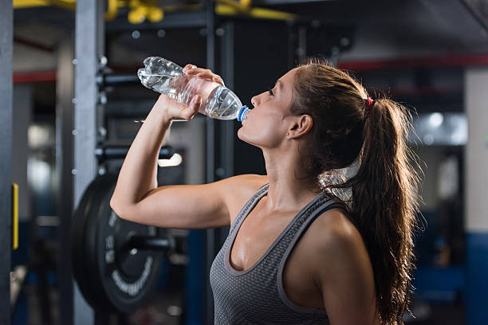
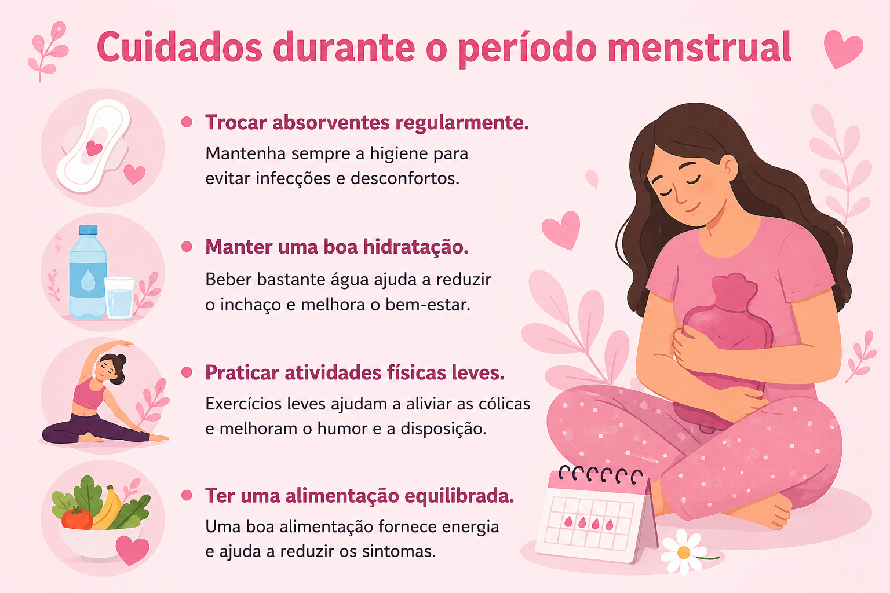

Informação, dignidade e bem-estar para todas!
Conheça mais sobre o ciclo menstrual, seus cuidados e os benefícios disponíveis para mulheres em situação de vulnerabilidade social.


A menstruação é um processo natural do corpo feminino que faz parte do ciclo reprodutivo.
Pode variar entre 21 e 35 dias.
Beber água ajuda a reduzir o inchaço.
Podem ajudar no alívios das cólicas.


Existem programas públicos voltados ao combate da pobreza menstrual, oferecendo acesso gratuito a absorventes para pessoas em situação de vulnerabilidade social. Os benefícios governamentais voltados à saúde menstrual representam um importante avanço na promoção da dignidade, da igualdade e do acesso à saúde. Por meio da distribuição gratuita de absorventes e de políticas públicas de apoio, milhares de pessoas em situação de vulnerabilidade podem enfrentar o período menstrual com mais segurança, conforto e respeito. Essas iniciativas ajudam a combater a pobreza menstrual, reduzem a evasão escolar e contribuem para que mulheres e meninas exerçam seus direitos com mais autonomia e qualidade de vida, reforçando o compromisso do Estado com a inclusão social e o bem-estar da população.
Saiba Mais